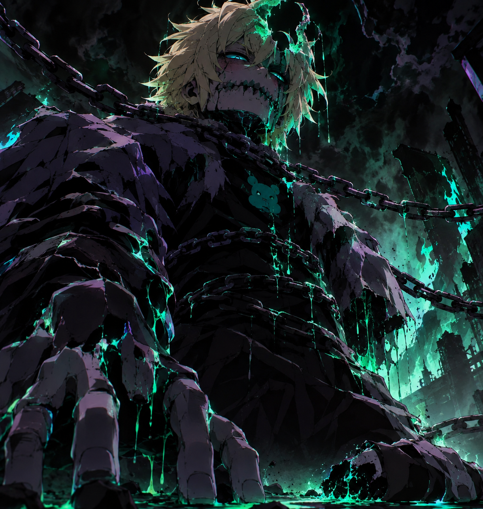

especie: vasija.
edad: +40-45 años.
estatura: 3.00m.
estado: liberado de su sello.
Habilidades: combate cuerpo a cuerpo, velocidad, teletransportación, hechizos, tentáculos de vacío, etcetera.
Familia: Rey Gabriel (padre), Emily Agreste (madre), el Caballero (hermano), Vel (media hermana).
mente: no tiene (.../..//-/.././-./.)
voz: es mudo
Voluntad: no tiene
"No pienses. No hables. No esperes. No... Padre."
